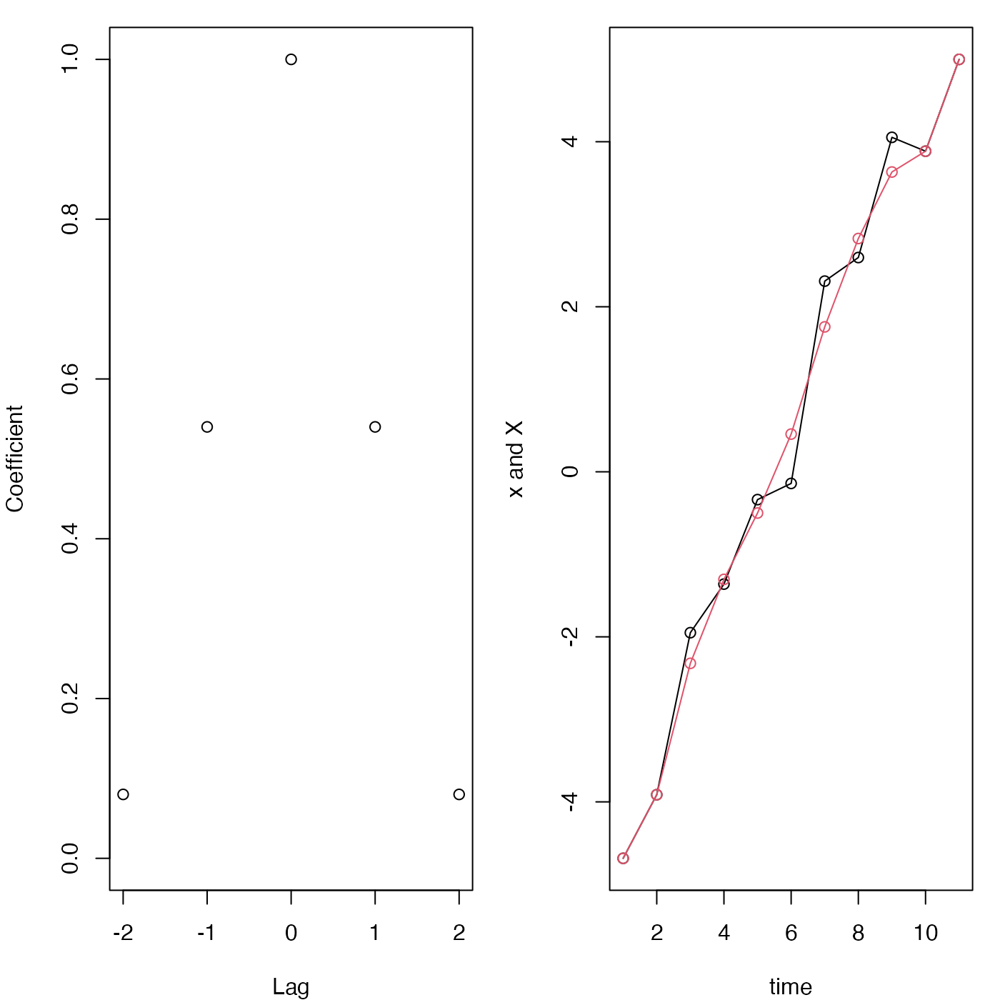

The filter coefficients are constructed using standard definitions,
and then stats::filter() is
used to filter the data. This leaves NA
values within half the filter length of the ends of the time series, but
these may be replaced with the original x values, if the argument
replace is set to TRUE.
lowpass(x, filter = "hamming", n, replace = TRUE, coefficients = FALSE)a vector to be smoothed
name of filter; at present, "hamming", "hanning", and "boxcar" are permitted.
length of filter (must be an odd integer exceeding 1)
a logical value indicating whether points near the
ends of x should be copied into the end regions, replacing
the NA values that would otherwise be placed there by
stats::filter().
logical value indicating whether to return the filter coefficients, instead of the filtered values. In accordance with conventions in the literature, the returned values are not normalized to sum to 1, although of course that normalization is done in the actual filtering.
By default, lowpass returns a filtered version
of x, but if coefficients is TRUE then it
returns the filter coefficients.
This function was added in June of 2017,
and it may be extended during the rest of 2017. New arguments
may appear between n and replace, so users are
advised to call this function with named arguments, not positional
arguments.
library(oce)
par(mfrow=c(1, 2), mar=c(4, 4, 1, 1))
coef <- lowpass(n=5, coefficients=TRUE)
plot(-2:2, coef, ylim=c(0, 1), xlab="Lag", ylab="Coefficient")
x <- seq(-5, 5) + rnorm(11)
plot(1:11, x, type='o', xlab="time", ylab="x and X")
X <- lowpass(x, n=5)
lines(1:11, X, col=2)
points(1:11, X, col=2)
